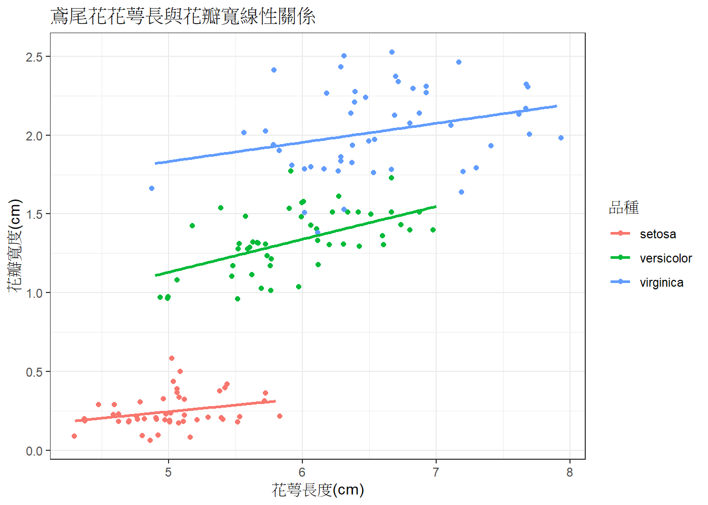

2.4 第一張圖
你可以將下面程式碼複製後，整個貼到你的RStudio介面或是R中執行，畫出你的第一張圖：
pkg <- 'ggplot2'
if ( !pkg %in% installed.packages()) install.packages(pkg)
invisible(lapply(pkg, library, character.only = TRUE))
ggplot(data = iris, mapping = aes(x = Sepal.Length, y = Petal.Width, color = Species))+
geom_jitter()+
geom_smooth(method='lm',se=F)+
theme_bw()+
labs(x='花萼長度(cm)',
y='花瓣寬度(cm)',
color = '品種',
title = '鳶尾花花萼長與花瓣寬線性關係')
上面是利用R內建的資料iris所進行的繪圖，只要學會使用ggplot2套件，不同類型的資料也都可以畫出好看又專業的圖。
- 鳶尾花(iris)資料集
- R. A. Fisher 1938年出版的 The Use of Multiple Measurements in Taxonomic Problems 資料，包含加拿大加斯帕半島採集到的三種鳶尾花品種形態資料。
像這樣的資料集有非常多已經內建在R程式中，我們稱為範例資料集，可以用data()查看可利用那些資料。